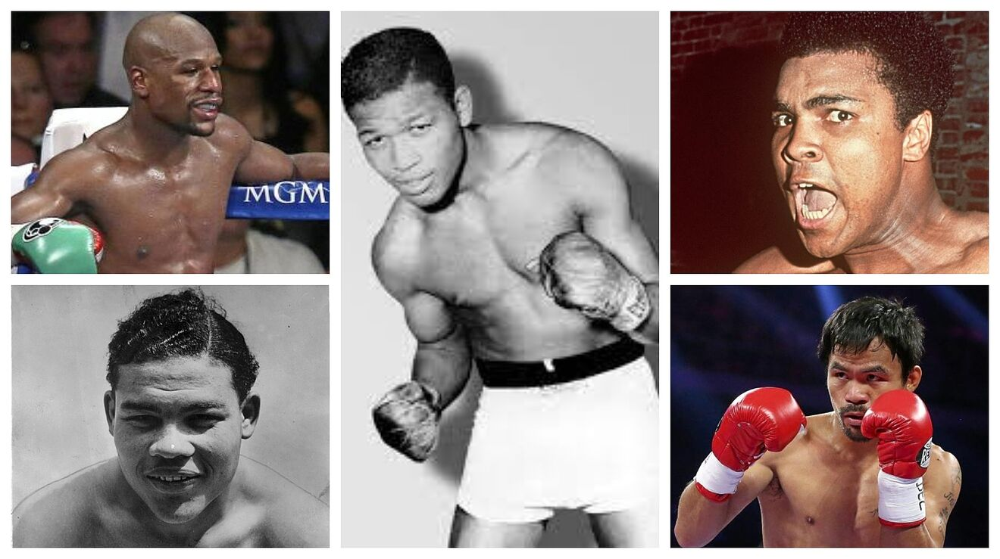

| --INICIO-- |
--Beneficios-- |
-- Calentamiento -- |
-- Futbol -- |
-- voleibol-- |
-- boxeo -- |
Boxeo
El boxeo es un tipo de deporte de contacto físico conocido a nivel mundial en el cual dos personas se enfrentan luchando. Es un deporte de carácter olímpico que además cuenta con una serie de torneos a nivel mundial durante el año por medio de los cuales los boxeadores intentan mantener sus marcas y primeros lugares. Un deporte que ha sido practicado en su mayoría por hombres pero que, con el paso del tiempo, ha ganado un lugar en el campo femenino.
En qué consiste
El boxeo es un deporte de contacto y combate que se practica dentro de un cuadrilátero, en donde dos personas luchan y se enfrentar en un duelo utilizando únicamente sus puños, los cuales a su vez, deberán de permanecer cubiertos por unos guantes durante todo el encuentro.
Características del boxeo
Este deporte se practica en un área conocida como ring.
Los contrincantes deben de ubicarse en una misma categoría dependiendo del peso.
Las peleas son supervisadas por árbitros quienes indican el inicio de la partida y hacen cumplir los reglamentos.
Las peleas se dividen en rounds, que pueden ser nueve o doce dependiendo de la categoría.
Cada round debe de durar dos minutos y deben tener además, un descanso de 60 segundos entre ellos.
Historia
De acuerdo a los historiadores, el boxeo es un deporte que tuvo sus inicios en Inglaterra, a inicios del siglo XVIII. Se originó como resultado a la búsqueda de un término que pudiera diferenciar las luchas que se daban en la época siguiendo una serie de reglas y las peleas que se producían en las calles para resolver conflictos personales. Las primeras reglas que vinieron a regular este deporte se originaron en el año 1743 y el uso de guantes como medida protectora se dio en el año 1889.
Ya para el siglo XIX, el boxeo empezó a expandirse a lo largo de Europa y se desarrolló como una actividad mundial. En esa época una serie de reglas se establecieron como la prohibición de golpear al contrincante si éste caía al suelo o la lucha cuerpo contra cuerpo. Estas reglas fueron creadas en el año 1730 por Jack Broughton. Se tienen datos que indican que el boxeo estuvo presente en los Juegos Olímpicos de la antigüedad, durante el año 668 a.C. En la época moderna, la modalidad fue introducida a los Juegos Olímpicos de San Luis en el año 1904 y se mantiene siendo parte de esta actividad hoy en día.

Reglas del boxeo
Entre sus reglas más importantes encontramos una serie de prohibiciones como por ejemplo, no se puede golpear la nuca del oponente ni tampoco la parte de atrás de la cabeza, no se puede golpear al oponente con patadas, los boxeadores no le pueden dar la espalda a sus contrincantes, tampoco son permitidos los golpes por debajo del área del cinturón ni son permitidos los golpes con la cabeza.
En el boxeo profesional, los asaltos deben de ser únicamente 3 o 4, no se permite el uso de protectores de cabeza aunque el árbitro tiene la facultad de detener la lucha si observa algún golpe que ponga en riesgo la vida del boxeador. Cada participante deberá contar con un médico personal que le atienda en caso de golpes severos, y los jugadores deben de ir con el pecho descubierto durante la pelea.
Equipamiento
Guantes: se utilizan como medio de protección y recubren las manos de los boxeadores. Tienen también la función de suavizar un poco el golpe durante el combate reduciendo así la cantidad de heridas en el rostro.
Protector bucal: se usa, como su nombre lo indica, para proteger la boca del boxeador. Está hecha de un material sintético que ayuda a cuidar los dientes, la lengua y la mandíbula.
Pantaloneta: conocida también como calzón es una prenda que deben usar todos los boxeadores y que idealmente, debe fabricarse con material transpirables y con un elástico en la cintura para mejorar la movilidad.
Botas: las botas deben brindar un buen apoyo al boxeador en el pie y en el tobillo. Deben de contar además, con un acolchado que le dé mayor protección a las articulaciones y tejidos.
Ring: es una estructura cuadrada que debe medir como mínimo 5 x 5 metros, para los encuentros de índole internacional deben medir 6 x 10 metros. La superficie de este ring que de estar cubierta por una lona y la construcción debe de ser sólida y bien nivelada.
Competiciones
El boxeo al igual que muchos otros, tiene una serie de torneos o competiciones tanto a nivel nacional como internacional. Estas competencias internas en los países se realizan con el objetivo de que los boxeadores vayan subiendo de ránking, sobre todo en el aspecto nacional. Es un deporte que se encuentra también incluido en los Juegos Olímpicos que se realizan cada cuatro años. Existen competiciones como por ejemplo los Juegos del Mediterráneo, los campeonatos de Europa y los Campeonatos del Mundo donde los boxeadores defienden el primer lugar.
Boxeadores destacados
Algunos de los boxeadores más destacados a nivel mundial se mencionan a continuación:
Muhammad Ali considerado como el mejor boxeador del mundo y la historia.
Carlos Monzón, argentino que fue campeón mundial en varias ocasiones.
Jake LaMotta, estadounidense campeón de peso mediano.
Salvador Sánchez, mexicano campeón en peso pluma.
Mike Tyson un polémico boxeador de Estados Unidos.
Rocky Marciano, de nacionalidad italiana y estadounidense, fue famoso por sus nocauts.

Curiosidades del boxeo
El asalto más grande de boxeo que se ha dado en el mundo sucedió el 6 de abril de 1883, una lucha entre Jack Burka y Andy Brown. Esta pelea duró un total de 110 asaltos y se extendió por siete horas y quince minutos. El día 5 de setiembre de 1923, en un enfrentamiento entre Gene LarRue y Kid Pancho, los dos jugadores acertaron un golpe al mismo tiempo por lo que cayeron en la lona sin poder levantarse. El combate de menor duración se dio en Minnesota, en 1947, una pelea que duró únicamente cuatro segundos. El boxeador más alto de la historia fue Gomea Mitu, un rumano que medía 2.33 metros y pesaba 148 kilogramos. Por último, el único boxeador que permaneció invicto durante toda su carrera fue Rocky Marciano quien se retiró del deporte en 1955.